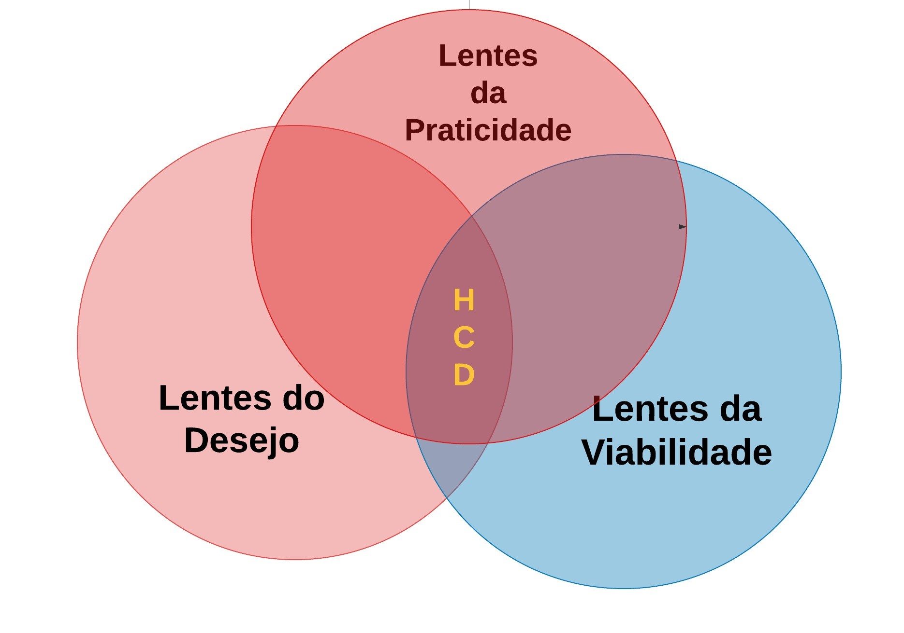
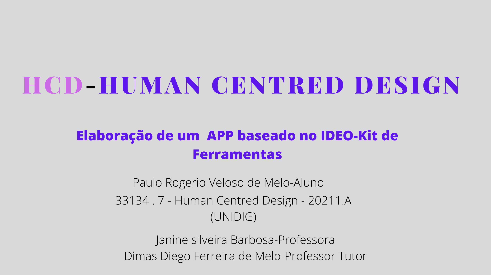

|  |  |
O que desejam os tabalhadores em saúde envolvidos no PSF-Programa de saúde Família? Quais os seus desafios?
Os Agentes Comunitários de Saúde , na troca de informações constantes entre a comunidade a que assiste e a equipe de profissionais(Enfermeiros, Médicos) se veêm as voltas com dezenas de formúlários para preencher.
A manutenção de dados em papel em uma área sensível ao seu trabalho, como o controle das vacinas na população asistida e a busca por soluções é anseio constante destes profissionais.
Ao mergulhar no ambiente de trabalho de uma equipe de saúde da família , o proponente coletou histórias de problemas de manipulação de formulários no dia-a-dia dos profissionais de saúde. O uso de tablets e celulares com softwares os mais diversos que embora extremamente úteis, não tinha a possibilidade de fazer um monitoramento do estado vacinal das crianças.
Fornecer soluções inovadoras, de baixo custo e colocadas no mundo real,é mais importante que gerar documentos ou relatórios. Ao olhar a nossa volta nos deparamos com inúmeros produtos e objetos frutos da elaboração humana e desenvolvido para uma solução humana.Por issso, o HCD se resume na ideação de soluções de problemas humanos sobre a ótica do seu destino final:o homem. Ao observar que tudo a nossa volta , com exeção da natureza é fruto da técnica e elaborado para uso e solução de problemas humanos,desta constatação nasceu o design Centrado no Homem.
Os ACS (Agentes Comunitários de Saúde ) fazem visitas periódicas às famílias ,e tem entre muitas atribuições , acompanhar o estado vacinal de crianças na sua área de atuação.
Identificar se a criança está com seu ciclo básico de vacinas em dia e manter uma cópia “espelho” do cartão de vacinas das crianças no seu território é feito normalmente com preenchimento de formulários.
Os aplicativos oferecidos pelo ministério da Saúde, o e-Sus , normalmente usado em tablets e celulares , para cadastramento das famílias e acompanhamento , não tem esta funcionalidade, levando a que os mesmos tenham que levar nas suas visitas um volume grande de papéis.
Dentro o que preconiza o HCD, foi colocado como algo que possa ser o mais amplo possível,sendo uma ferramenta útil a toda equipe, médicos e enfermeiras, além dos ACS(Agentes de Saúde) .
Formulário de um Carão de Vacinas que deve conter os dados do cartão da criança original, em constante atualização pelo ACS-Agente Comunitário de Saúde.
Aplicativo E-sus AB Território
| © Paulo Rogerio Veloso de Melo -Baseado no HCD-Human Centred Design-Kit de Ferramentas 2ª edição-Versão em Português. |